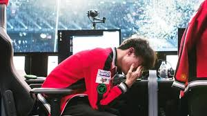

unfortunatly 2017 would see t1 lose at the world stage for the first time ever. a disapointinlgy quick 3-0 for the 2016 runner up Samsung Galaxy. This loss would unfortunatly start a dark era for T1 Failing to reach worlds in 2018 and 2020. they would get to semifinals in 2019 and 2021 before returning to the finals in 2022 with the roster of Zeus, Oner, Faker, Gumayusi, and Keria affectionatly refered to by fans as ZOFGK. The favorites in 2022 they would go the full 5 games but the dark horse DRX would take the cup.
While 2022 may have given fans hope 2023 was unfortunatly uneasy. Halfway though summer star midlaner Faker was benched due to a wrist injury though qualification chances up into the air. Luckly Faker would make his return not only getting his team into the regional playoffs but getting them secondplace and a trip to worlds. After a 3-1 including a victory over china's BLG to advance T1 would find themselves as the only non Chinese team left with 3 advanced and 1 waiting to take them on in Quarters. T1 would sweep aside LNG to get to semifinals and stare down tournament favoirtes JDG and the man who ended their dynasty Ruler. T1 and JDG would trade games 1 and 2 and deep into game 3 JDG look poised to win the game before Faker found an angle to eliminate Ruler and T1 took game 3 and 4 advancing to finals. Finals would see t1 vs another darkhorse Weibo and their star toplaner TheShy but nothing would stop them as they stomped the LPL's last hope and claimed the organizations and fakers 4th worlds title.

A decade after thir first T1 and Faker had won again the best player in the world proved that despite the hardships he could still do it.